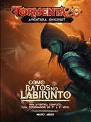
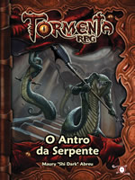
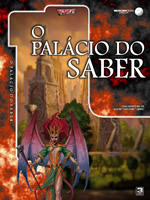
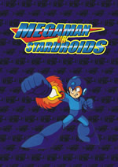

|  |
Como Ratos no LabirintoDepois da Libertação de Valkaria, um novo e engenhoso complexo de câmaras irá desafiar os mais bravos heróis. A mais cruel e engenhosa masmorra já criada em Arton, um desafio digno dos mais sagazes e perspicazes: As Catacumbas de Leverick. Rodleck Leverick, sumo-sacerdote de Hyninn, o Deus da Trapaça, preparou um novo setor de seu gigantesco labirinto, repleto de armadilhas impensáveis, passagens secretas, monstros e desafios lógicos. Há recompensas valiosas, claro, mas apenas os mais sagazes e capazes conseguirão superar seus próprios limites para saírem vivos deste pesadelo! Será que você irá sobreviver? Com texto de Maury Abreu, um dos autores da épica A Libertação de Valkaria, e edição de Pablo Urpia, o melhor editor que a Beholder Cego já teve, Como Ratos no Labirinto é uma aventura inédita completa para Tormenta20 no melhor estilo "exploração de masmorra". Este livro contém um mapa de masmorra completo com 18 encontros que irão testar não apenas as capacidades de combate dos personagens como a perspicácia e as mentes dos "jogadores" com enigmas, charadas e desafios complexos que vão surpreendê-los! Você também pode baixar todos os mapas e marcadores para uso da aventura em plataformas digitais aqui no blog da Beholder Cego, elevando a emoção a um novo patamar! Entre e divirta-se... mas olhe bem onde pisa... |
|  |
O Antro da SerpenteSszzaazitas ameaça Petrynia, realizando sacrifícios em nome de sua divindade maligna. Poderão os heróis vingar os mortos e pôr fim à ameaça? Utilizando um dos Mapas de Batalha lançados pela Jambô Editora, O Antro da Serpente é uma aventura para personagens iniciantes de Tormenta RPG. Aqui os heróis deverão invadir o covil dos vilões para eliminar a ameaça de uma vez por todas. Embora tenha sido criada para Tormenta RPG, a aventura para ser adaptada para outros jogos, incluindo a versão mais recente do sistema, o Tormenta20. |
|  |
O Palácio do SaberOs servos de Tanna-Toh são os maiores conhecedores de lendas, mitos e contos. Uma destas lendas fala de uma antiga e imensa biblioteca, construída por Miguell Ravagnanni, um servo de Tanna-Toh, mas de alguma forma perdida e esquecida. Neste lugar estariam escondidos alguns dos maiores segredos de Arton e neste ponto muitas hipóteses são levantadas, como o segredo sobre a Flecha de Fogo que destruirá Ironfist, o ritual para se tornar um lich, a verdade sobre a Tormenta, o Tomo de Hangpharstyth... Ninguém sabe com certeza o que a biblioteca esconde, sabem apenas que é chamada de o Palácio do Saber. O Paládio do Saber é uma aventura não linear para 3D&T Turbo, mas que pode ser facilmente adaptada para a versão mais recente do sistema. |
|  |
Megaman vs. StardroidsMegaman vs. Stardroids é uma série de aventuras para a adaptação Megaman 3D&T (que você pode conferir aqui). Juntas as aventuras formam uma pequena campanha que revisita alguns antigos eventos do cenário e coloca os heróis em confronto com velhos inimigos. Originalmente Megaman vs. Stardroids foi planejada para ocorrer após os eventos do jogo Megaman & Bass, sem considerar alguns jogos mais recentes (como Megaman 9 e Megaman 10), mas você pode adaptar os eventos da maneira que quiser. A aventura também serve de suplemento para a adaptação, conferindo estatísticas de um grande número de adversários. |